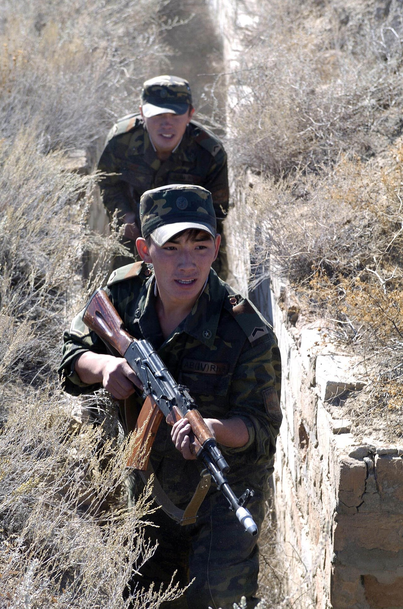

Тактикалық дайындық · Фортификация Drill & Tactical · Fortification Строевая и тактическая подготовка · Фортификация
Жеке құрамды оттан қорғау, окопты қазу реті, бруствер, жасырыну және маскировка. Protecting personnel from fire, the order of digging a trench, the parapet, cover and camouflage. Защита личного состава от огня, порядок отрывки окопа, бруствер, укрытия и маскировка.

Фортификациялық құрылыстар — жеке құрам мен техниканы жау отынан қорғауға және өз отын тиімді жүргізуге арналған инженерлік құрылыстар. Олар жауынгерді оқтан, жарықшақтардан, соққы толқынынан және ауадан бақылаудан жасырып, шайқас алаңындағы тіршілікке қабілеттілікті (живучесть) еселеп арттырады. Field fortifications are engineer-built works that shelter personnel and equipment from enemy fire and let friendly fire be delivered effectively. They hide the soldier from bullets, fragments, blast and aerial observation and multiply survivability on the battlefield. Фортификационные сооружения — инженерные постройки для защиты личного состава и техники от огня противника и для эффективного ведения своего огня. Они укрывают бойца от пуль, осколков, ударной волны и наблюдения с воздуха и многократно повышают живучесть на поле боя.
Негізгі құрал — кіші жаяу әскери күрек (МПЛ-50, ұзындығы ≈ 50 см). Қазу әрқашан жеңіл атыс позициясынан басталып, біртіндеп толық бейінге дейін тереңдетіледі. The basic tool is the small infantry spade (MPL-50, about 50 cm long). Digging always starts from a hasty firing position and is deepened step by step to the full profile. Основной инструмент — малая пехотная лопата (МПЛ-50, длина ≈ 50 см). Отрывка всегда начинается из положения для стрельбы и постепенно доводится до полного профиля.
| БелгісіCriterionПризнак | ТүрлеріTypesВиды | Қорғаныс деңгейіProtection levelУровень защиты |
|---|---|---|
| Қорғанысы бойынша — ашықBy protection — openПо защите — открытые | Жеке окоп, бөлімше окобы, траншея, ату саңылауы (щель).Individual weapon pit, squad trench, connecting trench, slit.Одиночный окоп, окоп на отделение, траншея, щель. | Оқтан, жарықшақтан, көлденең оттан.Bullets, fragments, flat-trajectory fire.От пуль, осколков, настильного огня. |
| Қорғанысы бойынша — жабықBy protection — coveredПо защите — закрытые | Жабылған саңылау, блиндаж, пана (убежище).Covered slit, dugout, shelter.Перекрытая щель, блиндаж, убежище. | Жоғарыдан жарылыс, жарықшақ, ауа райынан.Overhead bursts, fragments, weather.От навесного огня, осколков, непогоды. |
| Тағайындалуы бойыншаBy purposeПо назначению | Атуға, жасырынуға, басқару пункттері, техника мен қару-жарақ үшін.For firing, for cover, command posts, for equipment and weapons.Для стрельбы, для укрытия, командные пункты, для техники и вооружения. | Тапсырмаға қарай әртүрлі.Varies by task.Различный, по задаче. |
| Дайындалу уақыты бойыншаBy time availableПо времени возведения | Тездетілген (полевые) және алдын ала дайындалған.Hasty (field) and deliberate (prepared in advance).Возводимые в спешке (полевые) и заблаговременные. | Уақыт көп болса — берігірек.More time means stronger works.Больше времени — прочнее. |
Окопты кіші жаяу әскери (сапёр) күрегімен от астында жатып жатып бастайды. Қазу үш кезеңмен — жеңіл позициядан толық бейінге дейін — біртіндеп жүргізіледі. The trench is dug with a small infantry (entrenching) spade, beginning while lying down under fire. Digging proceeds in three stages, from a hasty position to the full profile. Окоп отрывают малой пехотной (сапёрной) лопатой, начиная лёжа под огнём. Отрывка ведётся в три этапа — от облегчённой позиции до полного профиля.
| ЭлементElementЭлемент | ТағайындалуыPurposeНазначение |
|---|---|
| БрустверParapetБруствер | Алдынан қорғайды әрі қаруға тірек болады; жаудан жасыру үшін шыммен бүркеледі.Protects the front and gives a rest for the weapon; turfed over to hide it from the enemy.Защищает спереди и служит упором для оружия; обкладывается дёрном для маскировки. |
| Тыл бруствері (тыльный валик)Rear bankТыльный бруствер (валик) | Артынан келген жарықшақтан қорғайды.Shields against fragments coming from the rear.Защищает от осколков, летящих с тыла. |
| Берма (берма)BermБерма | Окоп қабырғасы мен бруствер арасындағы 30–40 см алаң — топырақтың құламауы үшін.A 30–40 cm ledge between the wall and parapet to keep soil from sliding back in.Площадка 30–40 см между стенкой и бруствером, чтобы грунт не осыпался обратно. |
| Оқ-дәрі қуысы (ниша)Ammunition nicheНиша для боеприпасов | Оқ-дәрі мен гранаталарды жаңбырдан қорғап сақтау.Keeps ammunition and grenades stored and dry.Хранение боеприпасов и гранат, защита от сырости. |
| Су ағызу құдықшасы (водосборный колодец)Drainage sumpВодосборный колодец | Суды жинап, окоп түбін құрғақ ұстайды.Collects water and keeps the trench floor dry.Собирает воду, дно окопа остаётся сухим. |
| Байланыс жолы (ход сообщения)Communication trenchХод сообщения | Окоптар мен позицияларды жасырын жалғап, қозғалыс пен ауысуды қамтамасыз етеді.Links trenches and positions under cover, allowing concealed movement and rotation.Скрытно соединяет окопы и позиции, обеспечивает перемещение и смену. |
Жабылған саңылауCovered slitПерекрытая щель
Үстіне жабын мен 30–60 см топырақ — жарықшақ пен оқтан қорғайды.Roofed and topped with 30–60 cm of soil; stops fragments and bullets.Перекрытие плюс 30–60 см грунта; защищает от осколков и пуль.
БлиндажDugoutБлиндаж
Бөренелер төсемі (накат) + топырақ қабаты; демалуға және зақымдаушы факторлардан қорғануға арналған.Log roof plus a soil layer; for rest and protection from damaging factors.Накат брёвен плюс слой грунта; для отдыха и защиты от поражающих факторов.
Пана (убежище)ShelterУбежище
Ең берік құрылыс; герметикалық есік пен сүзгі-желдеткішпен жабдықталса, ЖҚЖҚ-дан қорғайды.The strongest work; with a sealed door and filter-ventilation it protects against WMD.Самое прочное сооружение; с герметичной дверью и фильтровентиляцией защищает от ОМП.
Маскировка окоп бітісімен бірден басталады. Қолданылатын құралдар: шым (дёрн), бұтақтар, шөп, табиғи бояулар және маскировкалық торлар. Camouflage begins the moment the pit is dug. Means used: turf, branches, grass, natural-tone paint and camouflage nets. Маскировка начинается сразу после отрывки окопа. Средства: дёрн, ветки, трава, естественная окраска и маскировочные сети.
Негізгі қателіктерден аулақ болыңыз: жаңа қазылған топырақты бетке шашпаңыз, тегіс геометриялық пішіндер жасамаңыз, жылтыр заттар мен көлеңкені жасырыңыз. Жер бедерінің табиғи фонын бұзбасаңыз — окоп жоғарыдан да, жанынан да, тіпті жылулық бақылаудан да байқалмайды. Avoid the common errors: do not scatter fresh soil on the surface, do not leave straight geometric shapes, mask shine and shadow. Keep the terrain's natural background intact and the trench stays unseen from above, from the side and even on thermal sights. Избегайте типичных ошибок: не разбрасывайте свежий грунт по поверхности, не оставляйте ровных геометрических форм, скрывайте блеск и тень. Не нарушайте естественный фон местности — и окоп не заметен ни сверху, ни сбоку, ни в тепловизор.